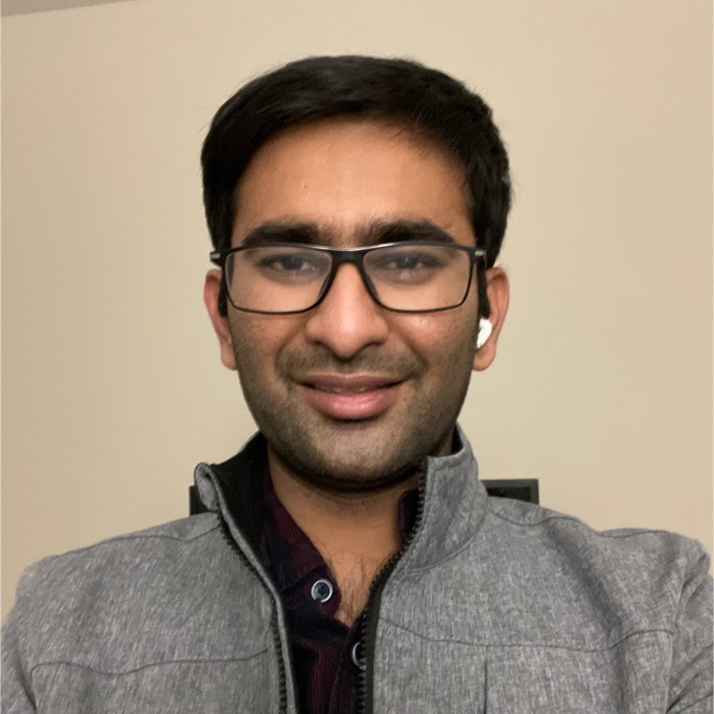

HARSHAVARDHAN REDDY ABBEYDODDI BOLLA
Sunnyvale, California || 480-648-6141 || ab.harshavardhan@gmail.com || www.linkedin.com/in/habbeydo
Sunnyvale, California || 480-648-6141 || ab.harshavardhan@gmail.com || www.linkedin.com/in/habbeydo
Passionate engineer working on design and development of the leading edge products in dynamically changing mobile world. Have complete design cycle experience from concept generation to end product design
Programming Languages: C, Assembly Level Programming, System Verilog, Python
EDA Tools: Orcad, Xpedition, Cadence Virtuoso, Cadence Encounter , Proteus VSM, MATLAB, ADS
Simulators: Cadence Spectre, Modelsim, H-Spice, P-Spice, Prime Time.
Equipment: Spectrum Analyzers, Oscilloscopes, Power supplies, Electronic Loads, DMM’s
Interfaces: I2C, SPI, UART, USB 2.0, USB 3.0, SDXC, LVDS, HDMI, ETHERNET, DDR, CAN.
Course Work: High Speed Serial Links, Digital systems and Circuit, Analog Integrated Circuits, VLSI Design, Analog to Digital Converters, Advanced Analog integrated Circuits, RF Transmitters and Amplifiers, Oversampling ∑ ∆ Data Converters, Analog Signal Processing & SC Circuits